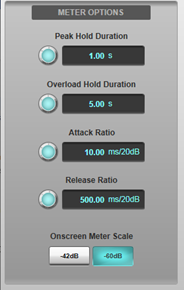
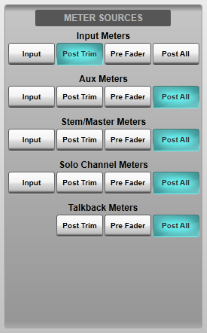
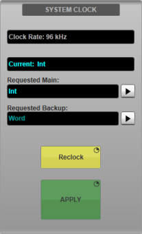
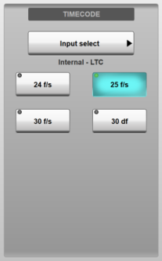
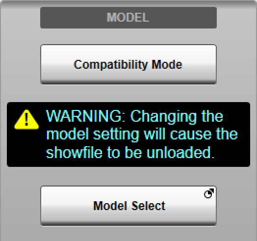
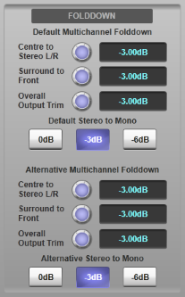
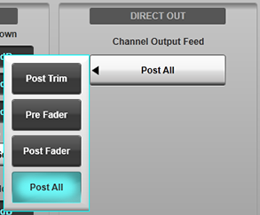

The Options can be found in MENU > Setup > Options.
The following pages detail the settings in each Options tab:
CONSOLE Options
SYSTEM Options (this page)
SURFACE Options
USER Options
USER KEYS Options
REMOTE Options
NETWORK Options
DAW Options
External Control Options
System Options
These relate to system-wide settings such as meter ballistics, clock source, etc.
System Options are found in MENU > Setup > Options > SYSTEM tab.
Meter Options
The following timings can be adjusted:
- Peak Hold Duration: The amount of time the highest signal level indication stays visible (0s to 10s, Infinite);
- Overload Hold: The amount of time overload lights stay lit after an overload takes place (0s to 60s, Infinite);
- Attack Ratio: The speed at which the meters respond to an increase in level, measured against the change in level (1 to 100 ms/20 dB);
- Release Ratio: The speed at which the meters fall back down after a peak, measured against the change in level (100 to 1000 ms/20 dB).
To change a value, either drag the on-screen encoder, or double-tap on the value and edit it using the standard keypad which appears.
To access the infinite setting for Peak and Overload Hold, set the parameter to its maximum numerical value, then use the encoder to increase it one step more.
Clear Peaks and Clear Overloads can be used to reset unwanted held metering.
Note: The Attack and Release Ratio settings do not apply to the Overview screen meters as these use fixed ratios.The Onscreen Meter Scale setting toggles the onscreen meters' scale between -42dB and -60dB ranges. As per the ballistic meter option, meter scale is per front panel and can therefore be different for the main surface, remote or SOLSA control instance. The setting is stored as console storage and not recalled with showfiles or scenes.

Meter Sources
You can define the meter source point for various path types:
Input (pre Trim), Post Trim, Pre Fader and Post All options are independently available for Input Channels, Aux Buses, Stem/Master Buses and Solo Channels.
Post Trim, Pre Fader and Post All options are available for Talkback channels.
Matrix Channel metering is always set to Post All.
Defining the Clock (Sync) Source (consoles only)
To select a Main and Backup clock source for the console, select the appropriate source from the lists available in the System Clock section, also selecting the port number if clocking to MADI or Blacklight II (BLII) connections. Press & hold the APPLY button to set the clock source.
The clock source will only change if the requested source can be detected.
Note: The Current field displays the currently active clock source. If the Main clock source is lost the Backup will be used. If the Backup is lost the console's internal clock will be used. Use the Reclock button to retry locking to the Main/Backup clock source.
More information about clocking the system can be found in the Clocking the System pages.
Timecode Source
The source for the console's timecode receiver can be set by touching the button under the Timecode label and selecting a source from the submenus which appear.
If a timecode source is not detected, buttons will appear to manually set the frame rate, so that timecode values entered can be interpreted correctly. Select from one of the following options:
Timecode can be used to trigger Automation scenes.
- 24 f/s - 24 frames per second timecode source
- 25 f/s - 25 frames per second timecode source
- 30 f/s - 29.97 or 30 frames per second timecode source (non drop frame)
- 30 df - 29.97 or 30 frames per second timecode source (drop frame)
The current timecode value can be displayed in the status bar (tap the time area to toggle between time and timecode).
Note: If using ipMIDI for Timecode this should be a different ipMIDI port to that used for Automation MIDI Input/Output Actions, DAW Control and Events.
Compatibility Mode
A showfile created on a larger console may be loaded onto a smaller one (e.g. L500 Plus show onto an L300). The system will automatically enter Compatibility Mode if the showfile cannot fit within the resources available. More information on Compatibility Mode can be found in the Console Configuration section.
Console Model (SOLSA only)
The SSL Off-Line Setup Application (SOLSA) can be configured to operate as any current or legacy Live console model. This allows SOLSA to emulate a particular console for showfile editing and remote access (see Remote Options). Press & hold the Model Select button then select the relevant console button in the list to switch between models.
Important: Changing the model setting will cause the current showfile to be unloaded.
Folddown
Folddown is applied when routing 4.0 and 5.1 formatted Channels and Stems to Stereo and Mono Stems, Auxes and Masters. Settings are also available for folding down Stereo to Mono routes. A choice of two global user preset folddowns can be selected with variable Centre to Left/Right, Surround Left/Right to Front Left/Right, plus overall Left/Right level trims.
Each path can be configured to use the Default or Alternative settings using the Use Alt Folddown button in the Config Detail View page. Note: The Overall Output Trim parameter only applies when folding down a source with surround channels to a destination with only front channels.
Channel Direct Output
This is where the default output feed point of an Input Channel is customised. New Input Channels will be created with the default output feed point.
The options are Post Trim, Pre Fader, Post Fader and Post All.
Note: This option can be automated using the Output column of the Console row in the Automation filters pages.To change the Direct Output Feed Point on a per channel basis, go to the Input/Routing page of the channel's Detail View and tap Output:, located to the right.
